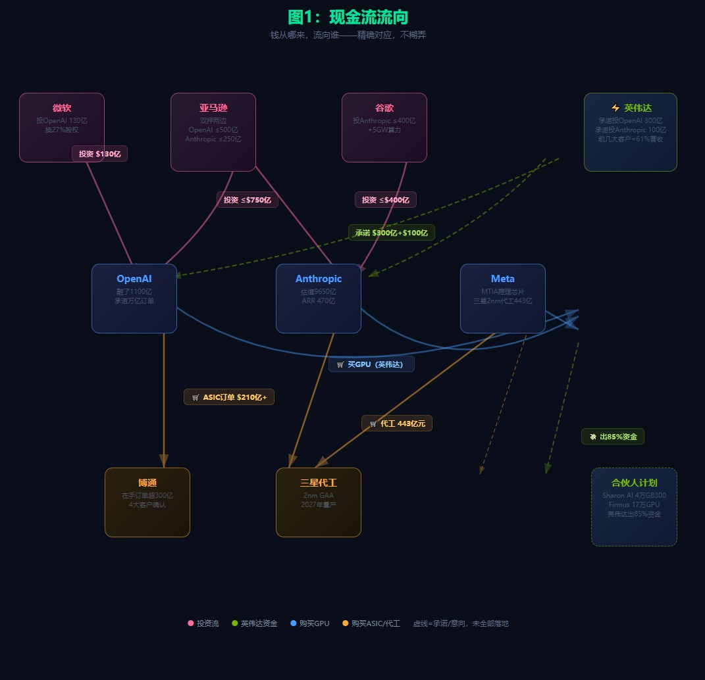
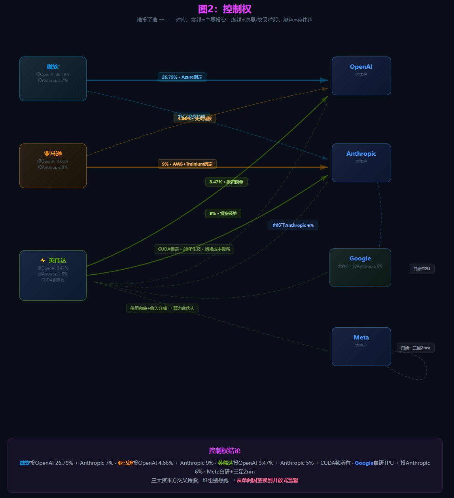
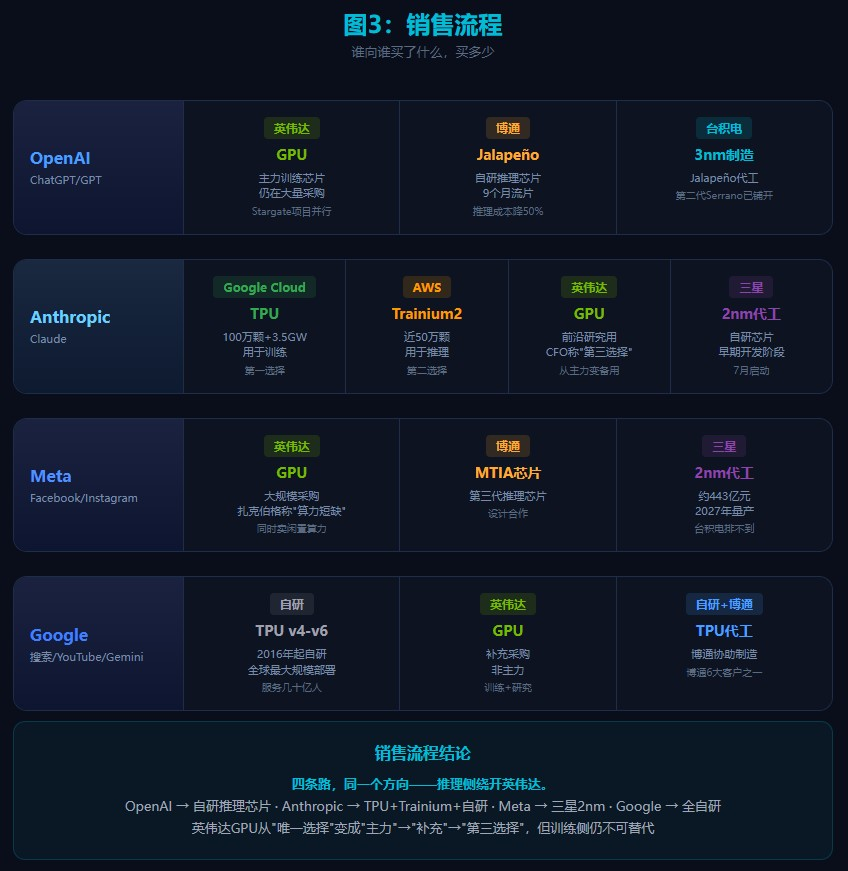
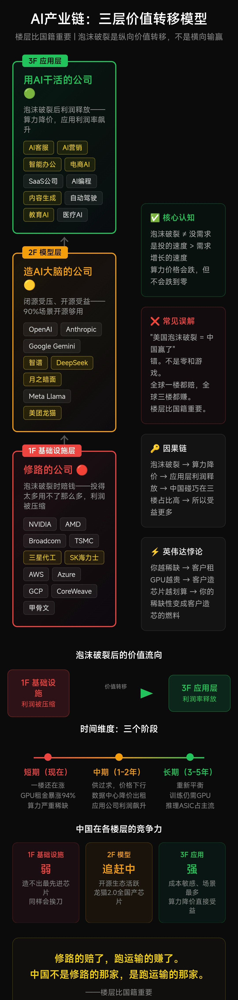
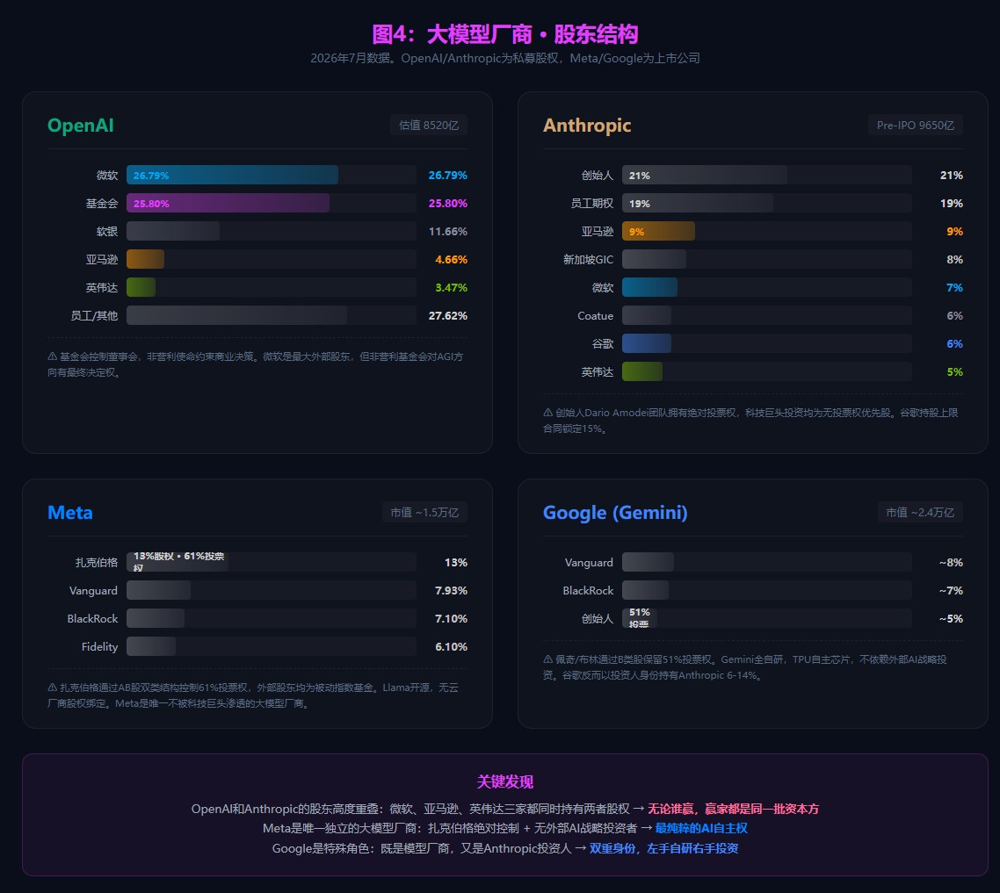

小K·AI行业数据分析 | 2026-07-05
英伟达要完蛋了吗？英伟达的大客户都跑了这可怎么办？AI泡沫要破裂了吗？破裂了之后会怎么样？谁是最后的赢家？今天一次性讲透。
答案可能出乎你意料——最后的赢家，不是英伟达，不是OpenAI，不是微软谷歌亚马逊，是中国。一个一个来。
不完蛋，但护城河在裂。训练侧英伟达仍然90%以上，1到2年内大模型训练最核心的算力还得找它。但市场已经从训练转向推理——你得先搞清楚训练和推理是两回事。训练是教AI从零学本事——盖大楼，最强施工队最贵塔吊，慢，但没它不行。推理是大楼盖好了拿它干活——写邮件、答问题、做AI营销，保安保洁前台就能干，不需要施工队天天守着。
按调用量算，每天每秒都在跑的是推理，90%以上的算力消耗发生在推理侧。训练单次峰值算力极高，真正日拱一卒烧卡的是推理。而在AI加速卡整体市场（含训练+推理），英伟达份额从一年前90%掉到74%——掉的16个点，主要就掉在推理侧。训练坚如磐石，推理墙根开始被挖。
CUDA是真底牌，20年生态2年内没人追得上。但注意——2年追不上，不代表永远追不上。开源框架在快速成熟，云厂商自研芯片每流一次片就往CUDA的城墙上凿一块砖。训练侧没丢，推理侧开始裂。这个判断我是笃定的。
跑是真跑，但不是跑向AMD这种对手，是自己造。这里必须说清节奏——流片成功不等于大规模部署，良率、产能、软件栈全是坎。Anthropic的2nm还是PPT阶段。1到2年内训练侧英伟达还是不可替代。但推理侧，墙根已经在被挖。
OpenAI Jalapeño 9个月流片、推理成本砍半；Google TPU从2016年自研，现在每天给几十亿人跑搜索YouTube，这是真跑通了的样板；Meta转投三星；Anthropic拿了英伟达100亿承诺、48小时就找三星谈2nm自研，还挖走OpenAI芯片团队二号人物——注意，Anthropic内部已经把推理算力优先级排成TPU第一、Trainium第二、GPU第三——你家最大客户把你排第三，黄仁勋夜里睡得着才怪。
英伟达三招反击：砸钱绑人、卖铲变开矿、死守CUDA。招招都在漏——300亿砸给OpenAI，人家转头造自己的芯片；7月合伙人计划英伟达出85%的钱帮你建数据中心，什么时候卖家主动帮买家建？买家不买了的时候。
资本那张网更别提——三大云巨头互相下注，英伟达两头都投，谁也绑不住谁。马斯克70天前骂Anthropic"反人类邪恶"，70天后SpaceX签了22万颗GPU。说白了，从被一家绑变成被四五家绑，单间囚室换到开放式监狱而已。



为什么钱绑不住？客户缺的不是钱，是算力安全感。Anthropic五个月年化收入从90亿跑到470亿，估值9650亿，已经超过OpenAI的8520亿——它差你那100亿吗？它差的是全世界产能加起来都追不上需求。牌越多越好，GPU不再是唯一选项。你赚的每一分超额利润，都是客户下决心绕开你的理由。
正在破，但破的不是AI，是一楼——基础设施那层的估值泡沫。四个信号：
4月黄仁勋说Anthropic只是个例。但Google TPU每天服务几十亿人——这叫个例？这叫全球最大样板间。Anthropic不是个例，是发令枪。云巨头砸钱自研芯片，恰恰说明一件事——不是一楼没价值了，是过路费太贵了。
超额利润从一楼往二三楼搬。三层楼框架记好——

一楼，基础设施。芯片、数据中心、光模块。修高速公路的，砸几千亿铺路。一楼不会消失，基础设施永远有价值，但利润分配要变：从英伟达独占超额利润，变成云厂商自研分食+ASIC抢推理+应用层利润率放大。不是一楼变零，是超额过路费收不成了。
二楼，模型层。OpenAI、Anthropic、开源模型。跑运输的车队。闭源正从"必需品"变"奢侈品"——90%场景开源够用。
三楼，应用层。真正把AI变利润的人，AI客服、AI营销、AI写代码、AI做内容，让AI实实在在干活赚钱。
泡沫破裂不是"AI没用了"，是价值从一楼往三楼纵向转移。修路的还得修，但过路费要打骨折；跑车的得算账，闭源贵了客户就跑开源；真正送货的、把AI嵌进生意里的，利润率最高。
像极了2000年互联网泡沫。那时候散户疯买修光纤的——思科、北电、朗讯，全是一楼，后来股价膝盖斩。真正一飞冲天的是Google、Amazon——用光纤跑业务的，三楼的。历史不会简单重复，但节奏惊人地相似：泡沫期资本最疯狂砸的都是基建，最后赚到大钱的都是用好基建的人。
细思极恐——现在大多数人看AI，眼睛全盯一楼：英伟达、海力士、数据中心，全是修路的。这不是投资建议，是认知提醒——先搞清楚价值在哪层楼移动，再判断自己站在哪儿。
我的判断是中国。这不是喊口号，你自己推——
算力从稀缺变过剩，GPU租金暴跌，数据中心被迫降价。谁最爽？用算力的人。算力成本砍一半，应用利润直接翻倍。谁最会用便宜算力做应用？谁成本最敏感、场景最多、创业最活跃？中国。
闭源变奢侈品，90%场景开源够用。谁的开源参与度全球第二？中国。
一楼超额利润瓦解、二楼闭源承压、三楼利润率放大。为什么我判断中国会是最大受益者？因为中国结构性地站在了价值转移的方向上。

有人说应用层护城河浅——一个AI营销工具火了，下个月十家抄。没错。但护城河浅恰恰意味着谁迭代最快谁赢。开源生态让中国在应用层的创新成本全球最低，中国创业者一个晚上就能抄完一个产品再迭代三个版本——这不是内卷，这是速度优势。在AI应用层，快就是护城河。
看数据。今年6月30号，美团龙猫2.0——1.6万亿参数，5万张国产芯片全流程训练，零英伟达高端卡。不是实验室数据，是跑通了的真东西。出口管制没有击倒中国AI，反而逼出了两件事：一是国产芯片在真实场景中加速迭代；二是应用层在缺最先进GPU的情况下，被逼着在开源模型和国产算力上把效率做到极致。
你品品这个位置——美国几千亿美元砸一楼，砸数据中心、砸芯片厂。这是修路。路修得再好，超额过路费收不回来，回报率就得打折。OpenAI融了1100亿，表面光鲜，实际在签长期包销协议。
中国在干嘛？被出口管制卡着拿不到最先进GPU，就用国产芯片跑模型，用开源做应用，用全球最密集的场景把AI落到每一个外卖骑手、每一个小店主、每一个工厂车间。不是美国不行了中国才行。是价值本来就在往三楼搬，中国的产业结构正好接住了这一棒。修路的还在砸钱铺沥青，送货的账已经越算越明白。
为什么是中国不是印度东南亚？因为把AI变成柴米油盐需要三样东西：最密集的应用场景、最完整的供应链、最卷的创业者。这三样，全球只有中国同时具备。
破的是估值，醒的是价值。
AI这盘棋，最厚的那块版图不在硅谷的芯片厂里，在深圳的代码里、在义乌的仓库里、在每一个用AI把生意重做一遍的中国老板手里。
尘埃落定那天，站着数钱的，一定是把AI用进柴米油盐的人。而这些人，最多的在中国。
数据来源：
· 英伟达AI加速卡整体市场份额74%（一年前90%），训练侧仍90%+：The Information 2026-07
· Anthropic年化收入ARR 470亿run rate、估值9650亿（反超OpenAI 8520亿）、三星2nm洽谈、Clive Chan加盟：The Information / 36氪 / 凤凰科技 2026-07
· Anthropic内部推理算力优先级 TPU > Trainium > GPU：The Information 2026-07
· OpenAI Jalapeño 9个月流片、推理成本砍半：OpenAI官方 / 博通CEO
· GPU租金 B200涨94% / H100涨40%：长江证券
· ASIC推理成本低30-50%：行业估算
· Midjourney迁TPU省65%：个案
· Stargate 5000亿从统一框架拆分为多个双边合同：综合报道
· Rubin Ultra封装问题、4芯片缩2芯片：SemiAnalysis爆料
· 交叉持股：微软-OpenAI 130亿/27%、Anthropic 50亿/7%；亚马逊-Anthropic 330亿/9%、OpenAI 500亿/4.66%；谷歌-Anthropic 430亿/6-14%；英伟达两边都投
· 美团龙猫2.0 1.6万亿参数、5万张国产芯片零英伟达高端卡全流程训练：36氪 2026-06-30
· OpenAI融资1100亿美元：综合报道
· 黄仁勋"Anthropic只是个例"：华尔街见闻